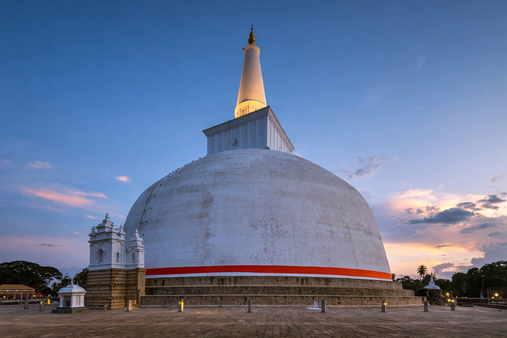

Anuradhapura
From Wikipedia, the free encyclopedia

Anuradhapura is a major city in north-central Sri Lanka and the capital of the ancient Anuradhapura Kingdom, among the oldest continuously inhabited cities in the world (founded in the fourth century BC and a capital for over a thousand years). Its sacred precinct preserves vast dagobas, palace ruins and the Jaya Sri Maha Bodhi — a fig tree grown from a cutting of the very tree under which the Buddha attained enlightenment, planted in 288 BC and the oldest historically authenticated tree in the world.
History
Anuradhapura became a royal capital under King Pandukabhaya and the centre of Theravada Buddhism after the arrival of Mahinda, son of Ashoka, in the third century BC. Its kings built some of the ancient world's largest brick structures — the Jetavanaramaya stupa was the third-tallest structure of the ancient world after the Egyptian pyramids — and hydraulic works (reservoirs such as Tissa Wewa) of lasting sophistication. Repeated South Indian invasions ended the kingdom's primacy in 1017, when the capital moved to Polonnaruwa.
The sacred city today
A UNESCO World Heritage Site since 1982, the old city is a living pilgrimage centre: white-clad devotees circumambulate Ruwanwelisaya and the Bodhi tree daily, while archaeology continues across a vast landscape of monasteries, hospitals and bathing pools.